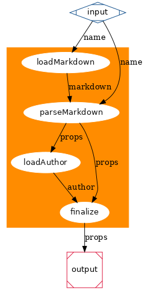

The Step of the Conductor
HEADS UP! This article was written for an older version of node. More up-to-date information may be available elsewhere.
There have been several async management libraries proposed and written. I'm guilty of at least three of them. The reason for this proliferation of code is that they're all trying to solve a very real problem with writing non-trivial applications that make heavy use of async callbacks.
Parallel and Serial
Most of the libraries to date help solve two main common patterns of function use. They are parallel execution and serial execution. In parallel execution you fire off several asynchronous functions and want a common callback to be called then they all finish. The serial pattern is when you have a chain of steps that can't execute till the previous one is done. Combining these two patterns gives some pretty flexible uses of async functions without excessive boilerplate or nesting.
Step
A very small library that I've been using for these simple cases is based on the idea from Will Conant's flow-js. I simplified the idea down to it's core and made some little assumptions to make it easier to use with node's error handling pattern. I call it step.
Here is a snippet of using Step in the wheat blogging engine I'm working on:
function loadArticle(name, callback) {
var props;
Step(
function readFile() {
Git.readFile(path.join("articles", name + ".markdown"), this);
},
function getAuthor(err, markdown) {
if (err) throw err;
props = markdownPreParse(markdown);
props.name = name;
loadAuthor(props.author, this);
},
function finish(err, author) {
if (err) throw err;
props.author = author;
return props;
}
);
}In this example, I pass three steps as functions to the Step helper. The first two end in a call to an asynchronous function. I pass the value this as the callback. This hooks's into Step's system so that it know to call the next step when the first is done. The parameters given to the callback are passed through to the next step. Notice that I created a closure variable props. This is so that the third step has access to the props defined in the second step, but not passed through by the loadAuthor call. The third step then does some final processing and calls the main callback to the outer function.
In essence loadArticle is a composite asynchronous function that had two other asynchronous function calls mixed with other synchronous logic within it.
How about an example that makes use of the parallel feature of Step:
// Reads the authors in the authors directory and returns a data structure
function loadAuthors(callback) {
var names;
Step(
function getFileNames() {
Git.readDir("authors", this);
},
function readFileContents(err, results) {
if (err) throw err;
var parallel = this.parallel;
results.files.forEach(function (filename) {
var name = filename.replace(/\.markdown$/, '');
loadAuthor(name, parallel());
});
},
function parseFileContents(err) {
if (err) throw err;
var authors = {};
Array.prototype.slice.call(arguments, 1).forEach(function (author) {
authors[author.name] = author;
});
return authors;
}
);
}This example is similar, but with the new addition of the this.parallel function. This parallel function generates a new callback when called and sets an internal counter in the Step system. Though it's hard to see with this example, the arguments to parseFileContents are first a single err and then the second argument to each of the loadAuthor callbacks.
Perhaps this example will be more clear:
var Step = require('step');
Step(
function loadData() {
Git.getTags(this.parallel());
loadAuthors(this.parallel());
},
function renderContent(err, tags, authors) {
if (err) return response.simpleText(500, err.stack);
var data = {}; // Truncated for clarity
renderTemplate('index', data, this);
},
function showPage(err, content) {
if (err) return response.simpleText(500, err.stack);
render(request, response, {
title: "Index",
content: content
});
}
);This is the route handler for the front page of the blog. It needs data from two different async calls and can't render the main template till they're loaded. Then after the main template is rendered, the layout can be rendered. Both Git.getTags and loadAuthors output two arguments, but their errors arguments are compressed into a single err. If both emitted errors that the latter would overwrite the first.
More Advanced Patterns
You'll notice in these patterns that there is a fair bit of hacks to fit the cases where the logic isn't exactly parallel or serial. The closure variables are a kind of limited scope global. The repeated error handling code is redundant. Wouldn't it be nice if we could specify which output went to what input and chain arbitrary flows?
Conductor is born!
The other night, while talking with tmpvar(Elijah Insua), we decided it would be great to make a system that could calculate arbitrary control flows when given a set of dependencies. A few productive hours later conductor was born.
Instead of shoe-horning a problem into a preset pattern to make it easier on the computer, why don't we just explain the problem to the computer and let it figure out how to handle it for us?
Loading an Article
The example from above that uses Step could be rewritten to use Conduct (the function exported by the conductor library):
var Conduct = require('conductor');
// Define the loadArticle function using Conduct from conductor.
var loadArticle = Conduct({
M: ["_1", function loadMarkdown(name, callback) {
// Async function that loads the contents of the markdown file.
var filename = path.join("articles", name + ".markdown");
Git.readFile(filename, callback);
}],
P: ["_1", "M1", function parseMarkdown(name, markdown) {
// Sync function that parses the markdown and adds the name property
var props = markdownPreParse(markdown);
props.name = name;
return props;
}],
A: ["P1", function loadAuthor(props, callback) {
// Async function that loads the author based on props.author
loadAuthor(props.author, callback);
}],
F: ["P1", "A1", function finalize(props, author) {
// Final sync function that attaches the author object.
props.author = author;
return props;
}]
}, "F1");
At first glance this looks like a classic case of over-engineering. For this simple case you'd be right, but we're keeping it simple for purposes of explanation.
There is much to explain about the conductor library, so in an effort to get this article out this year, I'll end here. It's fully functionally, but need some serious documentation. Look for more in a future article.
The true power of conductor will be realized when tmpvar finishes his visual interface to it. For now, read the commented code and have fun.
Conclusion
So which is better and why do I have three async libraries of my own. Well I think that's just a testament to the fact that there is no one library that fits all use cases perfectly. Also I've started to dive into the world of node Streams and this opens a whole new can of works. Expect future articles about node streams now that node v0.1.90 is out!
I tend to use Step mostly in my projects because it fits well with my style. For some fun working examples of Step check out the source to my new blogging engine Wheat.
View the discussion thread.blog comments powered byDisqus